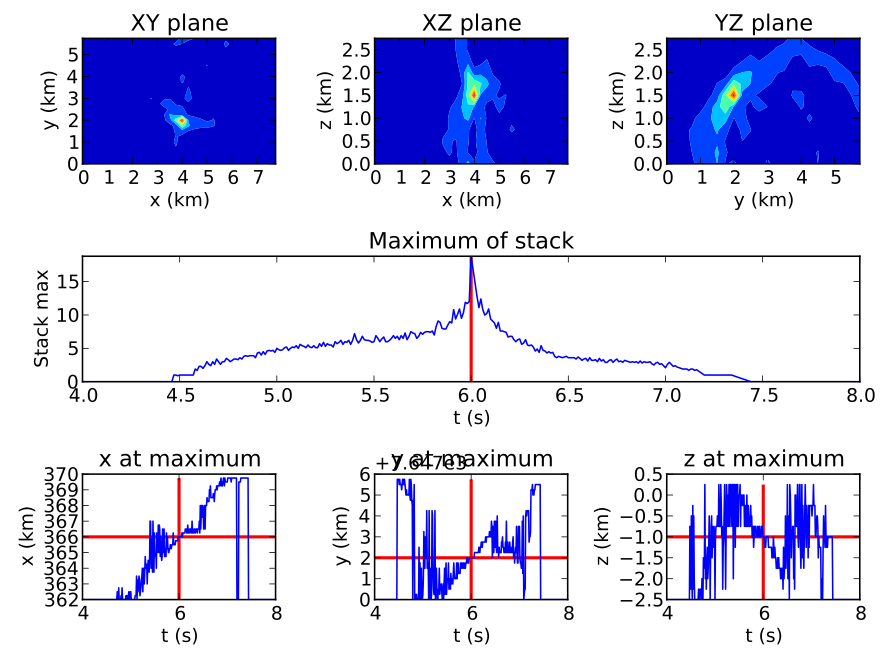

This is a quick guide for getting started with WaveLoc.
You can download the latest distribution here: waveloc-0.1.0.tar.gz, or if you’re feeling courageous you can download the deveopment version from github: https://github.com/amaggi/waveloc .
System requirements :
Untar the distribution, then install in the usual Python manner :
python setup.py install
Set the environment variable WAVELOC_PATH to point to a directory you want to work in (make sure you have plenty of space on the corresponding disk).
If you want to use NonLinLoc to calculate the 3D time-grids, download it from Anthony Lomax’s website http://alomax.free.fr/nlloc/, and install it where you prefer (you just need to be able to call Vel2Grid and Grid2Time correctly).
In order to get you started running waveloc, we have prepared the following tests :
Download the example scripts here : example_scripts.tgz, and the test data here : test_data.tgz (beware : it is a large file !). Unpack the test data archive in the §WAVELOC_PATH directory, and unpack the example scripts. Run the setup\_tests.py script to set up the required directory structure for the examples. Run the run\_syn\_test.py script to run the synthetic test. The first time you run the script it will take a long time, as the time grids need to be recalculated. After the run, you should the find the following figure in the directory §WAVELOC_PATH/out/TEST_Dirac/fig:
